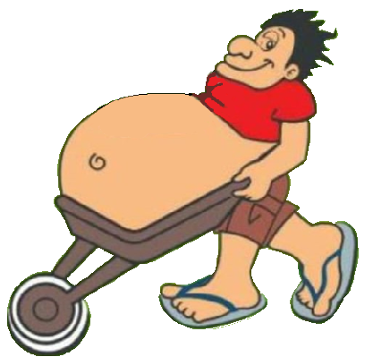

Do início
Os "Pé de Cana" - Coribe/BA desde 2004Os Pé de Cana é um grupo seleto de amigos, que se reúne em época festiva de São João na cidade de Coribe-BA. Criado numa tarde de Quarta-feira, o ano era 2004, por acaso em um bate-papo entre dois amigos (Hélio Almeida e Lucas Rocha). Ambos estavam buscando uma forma de "reunir a galera" quando a frase foi citada: _A gente só tem amigos Pé de Cana. o estalo veio na hora. _Está ai, o nome do grupo será "pé de cana". Ambos concordaram e espalhou a notícia para outros amigos que aceitaram de bom humor.
Este é o 'Caninha', nosso avatar. Desde o início vem nos acompanhando, trazendo alegria e humor a nossa arte. A parte avantajada de sua barriga se diz feito por alto consumo de fermentados, representando os amigos que com muito carinho vem cultivando o buxinho.
Próxima edição
No ano de 2022, faremos 18 anos, por se tratar de um evento especial, pela primeira vez, será permitido aos integrantes a companhia de sua companheira. Esta edição acontecerá no dia 24/06/2022 as 13:00 **LOCAL** e como sempre, antes do dia da festa, dia 16/06/2022 **LOCAL**, acontecerá a "entrega das camisas", para que possamos curti o São João com estilo e bom gosto. A festa final do dia 24 será um churrasco onde teremos bebidas e comida, também teremos uma banda local para animar o evento. Apertem os cintos e saem de suas casas pois o arraia dos Pé de Cana vai dar que falar!
_"Eu bebo sim, e dai?".
Como em todos os anos, as camisas sempre vem apoiada de uma frase de efeito, esta frase retrata em algum momento a fase que vivemos ou simplesmente alguém disse e ficou legal.
Em todos asses anos que se passaram, a organização do evento foi passada a grandes amigos que não deixaram a chama se apagar. Cada evento veio junto amigos diferente das edições anteriores, formando assim um grupo maior que se aparenta. Um agradecimento especial para nosso amigo Helinho, que por muitos anos veio tomando a frente do grupo e organizando as melhores resenhas que tivemos.
Os Pé de Cana, vem inovando e sempre estamos adicionando novos membros, pois o importante é esta com amigos se divertindo. Mas digo aos amigos que por ventura não estiverem nesta edição, favor nos desculpa, pois nem sempre temos os contatos de todos ou sabemos se estão disponiveis. Aos que não estiver e quiser se engressar, apenas comunicar que iremos entrar em contato.